how do humans think? introspection, psychological experiments, brain imaging (BRI)
acting humanly (turing test approach)
an operational definition: interrogator asks the entity via test interface if the test passes then it is intelligent
useful? lots of debate. gives a way to recognize intelligence but not how to achieve
rationality: abstract 'ideal' of intelligence. system is rational if it does 'right thing' given what they know
thinking rationally (laws of though approach)
logicist tradition
two obstacles:
translating natural languages to logic
slow to search through large number of statements
acting rationally (rational agent approach)
agent means todo
a rational agent acts to achieve best (expected) outcome (over uncertainty)
what behaviors? operate autonomously, perceive environment, adapt to
change, create and pursue goals
model behaviors other than thoughts:
acting rationally is more general than thinking rationally. correct thinking is only one way to achieve rationality
when there is no logically correct thing to do, still need to act
sometimes we do things without thinking - reflexes
use rationality over humans:
human not necessarily intelligent
rationality is mathematically well-defined and general
analogy between intelligence and flying machines
assume structures common to flying animals - fundamental for flying
then understand principles of flying
Week 2. Sept 12
uninformed search
defn. a search problem has
a set of states
an initial state
goal states/test: boolean function to tells whether given state is goal
a successor (neighbour) function: action to take from one state to another
optionally a cost associated with each action
a solution is a path from start state to a goal state (optionally with smallest cost).
eg. 8-puzzle problem
5 3 1 2 3
8 7 6 => 4 5 6
2 4 1 7 8 0
states: x00,x01,x02,...,x22, where xij is the number in row i and col j, i,j∈{0,1,2},xij∈{0,...,8}. xij=0 denotes empty square
initial state: 530,876,241
goal state: 123,456,780
successor func: consider the empty square as a tile. B is a successor of A if and only if we can convert A to B by moving the empty tile up, down, left, or right by one step.
choosing formulations:
state determines nodes; successor function determines edges
ideally we want to minimize them
we often do not generate the graph explicitly and store it, but use tree as we explore the search graph.
algo.(searching for solution)
construct search tree as we explore paths incrementally from start state
maintain a frontier of paths from start node
frontier contains all paths for expansion
expanding path: remove it from frontier, generate all neighbours of last node, and add paths ending with each neighbour to the frontier
search(G, start, test):
frontier = {s}
while frontier is not empty:
pop path n[0]...n[k] from frontier // main differenceiftest(n[k]):
return n[0]...n[k]
for neighbour n of n[k]:
add n[0]...n[k]n to frontier
DFS
treats frontier as LIFO stack
expands last/most recent node added to the frontier
search one path to completion before starting another (backtrack)
let b be the branching factor, m is max depth of the search tree, d is the depth of the shallowest goal state, then
space complexity: O(bm)
remembers m nodes on current path and at most b siblings for each node
time complexity: O(bm)
complete (is it guaranteed to find solution?): no
will get stuck in infinite path
an infinite path may/may not be cycle
optimal? no guarantee on cost
good when:
space is limited
many solutions exist, perhaps with long paths
bad when:
have infinite paths
solution is shallow
there are multiple paths to a node
BFS
fronter is FIFO queue
space complexity: O(bd)
must visit the top d levels
time complexity: O(bd)
complete?: yes
will not get stuck in cycle
optimal? no, but guaranteed to have shallowest
useful when:
space is not concern
want solution with fewest arcs
bad when:
all solutions are deep in tree
problem is large and the graph is dynamically generated
iterative-deepening search
combines BFS and DFS
for every depth limit from 1, perform depth-first search until depth limit is reached; then start over
space complexity: O(bd)
execute DFS for each depth limit => guaranteed to terminate at depth d
time complexity: O(bd)
complete? yes
optimal? no
heuristic search
not treating each state identically
uses heuristics to estimate how close the state to a goal
try to find optimal solution
defn. a search heuristich(n) is an estimate of the cost of the cheapest path from node n to a goal node.
good heuristics:
problem-specific
nonnegative
h(n)=0 if n is goal
easy to compute without search
lowest cost first search
frontier is a priority queue ordered by cost(n)
expand the path with lowest cost
aka dijkstra algorithm
properties
space & time complexities: exponential
completeness & optimality: yes under mild conditions
branching factor is finite
cost of every edge is bounded below by a positive constant
eg.
S ---> A ---> B ---> C ---> ...
1 | 1/2 1/4 1/8
v
N
algo never completes.
greedy best-first search
frontier is a priority queue ordered by h(n)
expand node with lowest h(n)
properties
space & time complexities: exponential
can have bad heuristics to visit every path in theory
complete? no, could stuck in cycle
optimal? no
eg. suppose cost of arc is its length, h is the euclidean distance. then algo get stuck in this graph:
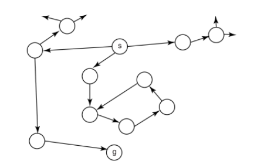
eg. optimal path is SBCG, but algo found SAG:
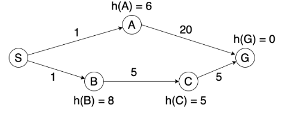
A* search
frontier is a priority queue ordered by f(n):=cost(n)+h(n)
expand node with lowest f(n)
properties
space & time complexities: exponential
optimal? if the heuristic h(n) is admissible, then solution is optimal.
among all optimal algos that start from the same start node and use same heuristic, A* expands fewest nodes
proof idea: any algo that does not expand all nodes with f(n)<C∗ may miss optimal solution
how to define admissible heuristic:
define a relaxed problem: by simplifying or removing constraints
solve relaxed problem without search
the cost of optimal solution to relaxed problem is an admissible heuristic to original problem
desireable heuristic properties:
heuristic is admissible, ie 0≤h(n)≤h∗(n), where h∗ is cost of simplified solution
heuristic have higher values (it is close to h∗)
heuristic that is very different for different states
defn. given heuristics h1,h2, h2 dominates h1 if
∀nh2(n)≥h1(n)
∃nh2(n)>h1(n)
theorem. if h2 dominates h1, then A* using h2 never expands more nodes than that uses h1.
some heuristics for 8-puzzle:
manhattan distance heuristic: sum of manhattan distance of the tiles from their goal positions
obtained by allowing any tile to move to any adj position
misplaced tile heuristic: whether position has its goal tile
obtained by allowing tile to move to any empty location
eg. which heuristic for 8-puzzle is better? manhattan is better since it always adds at least 1 if tile is not in place, but misplaced tile heuristic only adds 1.
cycle pruning
stop expanding path once we are following a cycle
...
for neighbour n of n[k]:
if n not in n[0]...n[k]:
add n[0]...n[k]n to frontier
...
time complexity for DFS: constant
time complexity for BFS: linear in path length
multiple-path pruning
if we found a path to a node, we can discard other paths to same node.
cycle pruning is a special case of multi-path pruning
search(G, start, test):
frontier = {s}
explored = {}
while frontier is not empty:
pop path n[0]...n[k] from frontier
if n[k] in explored:
continue
add n[k] to explored
iftest(n[k]):
return n[0]...n[k]
for neighbour n of n[k]:
add n[0]...n[k]n to frontier
eg.
can LCFS discard optimal solution? no
can A* discard optimal solution? yes
when we select a path to a node for 1st time, it may not be optimal
consistent heuristic:
an admissible heuristic requires that for any node m and any goal node g, we need h(m)−h(g)≤cost(m,g).
to ensure that A* with multi-pruning is optimal, we need a consistent heuristic function, ie for any two nodes m,n we have h(m)−h(n)≤cost(m,n)
so that we hit optimal path to a node first so it will not get discarded
a consistent heuristic satisfies monotone restriction, ie for any edge mn, we have h(m)−h(n)≤cost(m,n)
needs proof
Week 3. Sept 19
constraint satisfaction
difference from heuristic search problem?
it does not care about optimality
it is aware of internal structure of state
eg. 4-queens: if we have 2 queens in same row, search will keep trying, whereas CSP will discard
it is more efficient than search since it can discard large portion of search space
defn. in CSP, each state contains:
set X of variables
set D of domainsL Di is the domain for variable Xi for all i
set C of constraints specifying allowable value combinations
a solution is an assignment of values to all variables satisfying all constraints.
eg. state definition of 4-queens
variables: x0,x1,x2,x3 where xi is row position of the queen in column i, where i=0,1,2,3
domains: Dxi=0,1,2,3 for all xi
constraints: no pair of queens are in same row or diagonal: ∀i∀j((i=j)→((xi=xj)∧(∣xi−xj∣=∣i−j∣)))
eg. do you need to specify column constraint? no since it is already defined implicitly by separate variables for each column.
two ways of defining constraints:
list/table format: give a list of values of the variables that satisfy constraints
function/formula format: return true of values satisfy constraints (propositional formula)
backtracking search
we need to reformulate problem into incremental problem.
backtrack(assignment, CSP):
if assignment is complete:
return assignment
var = unassigned variable
for every value of var.domain:
if adding {var=value} satisfies all constraints:
add {var=value} to assignment
result = backtrack(assignment, CSP)
if result is not FAIL:
return result
remove {var=value} from assignment if it was added
return FAIL
eg. incremental CSP formulation for 4-queen:
state: one queen per column in the leftmost k columns with no pair of queens attacking each other
same as above, but xi can be _ to denote it has no assignment yet
goal state: 4 queens on board. no pair of queens are attacking each other.
eg 2 3 0 1
initial state: empty board _ _ _ _
successor function: add a queen to leftmost empty column such that it is not attacked by other existing queen
eg 0_ _ _ has successors 0 2 _ _ and 0 3 _ _
arc-consistency
we consider binary constraints only
how to handle constraints involving 3 or more variables?
convert to binary constraints
how to handle unary constraints?
remove invalid values from variable domain
notation. if X,Y are two variables, write c(X,Y) as a binary constraint.
⟨X,c(X,Y)⟩ denotes an arc, where X is primary variable and Y is secondary
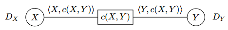
defn. an arc ⟨X,c(X,Y)⟩ is arc-consistent iff for every value v∈DX, there is a value w∈DY such that (v,w) satisfies the constraint c(X,Y).
eg. consider constraint X<Y. let DX=DY={1,2}. is the arc ⟨X,X<Y⟩ consistent?
no since if x=2 we cannot find value in DY to satisfy constraint.
algo.(AC-3 arc consistency)
// reduce domains to permit only valid answersAC3(arcs):
S = all arcs
while S is not empty:
select and remove ⟨X, c(X, Y)⟩ from S
remove every value in X.domain that does not have a value in Y.domain \
that satisfies the constraint c(X, Y)
if X.domain was reduced:
if X.domain is empty: // no solutionreturnfalsefor every Z != Y:
add ⟨Z, c'(Z, X)⟩ to S // or c'(X, Z)returntrue
eg. why do we need to add arcs back to S after reducing a variable's domain?
reducing a variable's domain may cause a previously consistent arc to become inconsistent
properties:
does order of removing arcs matter? no
there are three possible outcomes of the arc consistency problem:
domain is empty => no solution
every domain has 1 value => found solution without search
every domain has at least 1 value and some domain has multiple values => need to search
guaranteed to terminate? yes
time complexity: O(cd3) for n variables, c binary constraints and the size of each domain is at most d
each arc ⟨Xk,Xi⟩ can be added to queue at most d times because we can delete at most d values from Xi. checking consistency of an arc takes O(d2).
algo.(combining backtracking & arc consistency)
perform backtracking search
after each value assignment, do arc consistency
if domain is empty, return no solution (backtracks)
if unique solution is found, return solution
otherwise, continue search on the unassigned variables
local search
difference:
space may be infinite => do not explore search space systematically
do not care about path to the goal
can find reasonably good states quickly on average
not guaranteed to find solution even if one exists. cannot prove no solution exists
can solve pure optimization problem
complete-state formulation: start with a complete assignment of values to variables, then take steps to improve solution iteratively
defn. a local search problem consists of:
state: a complete assignment to all variables
neighbour relation
cost function
eg. local search problem for 4-queens
states:
variables: x0,x1,x2,x3 where xi is row position of the queen in col i.
domain: xi∈{0,1,2,3}∀i
initial state: a random state
goal state: 4 queens on board. no pair of queens are attacking each other
neighbour relation:
move one queen to another row in same column
or swap row positions of two queens
cost function: number of pairs of queens attacking each other directly or indirectly
the version 2 of the neighbour relation has disconnected components (eg. starting from 3211 we never get to optimal solution). however even if graph is connected we still might not find global optimum.
greedy descent (hill climbing)
descend into a canyon in a thick fog with amnesia/
start with random state
move to a neighbour with lowest cost if it is better than current state, otherwise stop
properties:
makes rapid progress toward a solution
can find local optimum only
eg. consider 3210 with relation 2, it is not local optimum nor global.
eg. consider 2301 with relation 1, it is (flat) local optimum but not global.
escape flat local maxima:
sideway moves: allow algo to move to a neighbour that has same cost
may get into infinite loop => limit number of consecutive sideway moves
tabu list: keep a small list of recently visited states and forbid algo to return to those states
choosing neighbour relation:
use small incremental change to variable assignment
tradeoff:
bigger neighbourhoods (preferred): compare more nodes at each step. more likely to find the best step. each step takes more time.
smaller neighbourhoods: compare fewer nodes at each step. less likely to find the best step. each step takes less time
random moves:
random restarts: restart search in a different part of the space
probability of finding global optimum approaches to 1
random moves: move to a random neighbour
eg. random restart is good for a, random walk is good for b
simulated annealing
start with high temperature and reduce it slowly
at each step, choose a random neighbour
if it is better, move to it
otherwise, move to a neighbour probabilistically depending on:
current temp T
how much worse is the neighbour compared to current state
at high temp, performs walks (exploration) more likely take worse steps
as temp approaches to 0, perform greedy descent (exploitation)
let A be current state and A′ is the worse neighbour, let T be current temp, then we will move to A′ with prob e−TΔC where ΔC=cost(A′)−cost(A).
Boltzmann distribution
as T→0 or ΔC→∞ the prob approaches to 0
algo.
simulated_annealing():
current = initial_state
T = large positive value
while T > 0:
next = random_choice(current.neighbours)
dC = cost(next) - cost(current)
if dC < 0:
current = next
else:
current = next with prob e^(-dC/T)
decrease(T)
return current
in practice, geometric cooling is most widely used (multiply by .99 each step)
population-based
instead of remembering one single state, we remember multiple states.
beam search
remember k states
choose k best states from all neighbours
k controls space and parallelism
eg.
what is beam search with k=1? greedy descent
k=infinity? BFS
eg. how is beam search different from k random restarts in parallel? in beam search, useful info can be passed across each thread.
problem with beam search: suffers from lack of diversity among k states => can quickly becomes concentrated in a small region.
stochastic beam search:
choose k states probabilistically
prob is proportional to its fitness => can ∝ecost(A)/T
maintains diversity in the population of states
mimics natural selection
asexual reproduction
genetic algo:
sexual reproduction
maintain population of k states
randomly choose two to reproduce, prob of choosing a state for reproduction to proportional to fitness
two parent states crossover to produce a child state
child state mutates with small probability
Week 4. Sept 26
uncertainty
why uncertainty?
agent does not know everything (current state and next states), but has to act
decisions are made in the absence of info or in the presence of noise
probability is formal measure of uncertainty.
two camps:
Frequentists' view
objective
compute probabilities by counting the frequencies of events
cannot make decision without observation
Bayesian's view (primary)
subjective
probs are degrees of belief
start with prior beliefs and update beliefs based on evidence
different agents can have different beliefs. without data, can make decision based on uninformed prior
no. if B is true, then A is more likely true, so W is more likely true.
are B, W conditionally independent given A? yes.
eg. are W and G independent?
A -> W
-> G
no. if W is more likely true, then A is more likely true, so G is more likely true.
are W, G conditionally independent given A? yes.
eg. are E, B independent?
E -> A
B ->
yes.
are E, B conditionally independent given A? no. suppose A is true. if E is true, then it is less likely that A is caused by B. if B is true, then it is less likely A is caused by E.
Week 5. Oct 3
defn. observed variable Ed-separatesX and Y iff E blocks every undirected path between X and Y.
claim. if E d-separates X and Y, then X and Y are conditionally independent given E.
what do we mean by block?
case 1.if N is observed, then it blocks path between X, Y
X ---- A ---> N ---> B ---- Y
anyany
undirected undirected
path path
case 2.if N is observed, then it blocks path between X, Y
X ---- A <--- N ---> B ---- Y
case 3.if N and its descendants are NOT observed, then they block path between X, Y
X ---- A ---> N <--- B ---- Y
|
v
...
otherwise we cannot say guarantee independence relationship.
eg.
are TravelSubway and HighTemp independent? no as E=∅ no. path is blocked
are TravelSubway and HighTemp (conditionally) independent given Flu? yes. E={Flu}; paths are blocked by observed evidence Flu (case 1).
are Aches and HighTemp independent? no.
are Aches and HighTemp independent given FLu? yes (case 1 and 2).
are Flu and ExoticTrip independent? yes (case 3).
are Flu and ExoticTrip independent given HighTemp? no. HighTemp is observed.
constructing bayesian networks
for a joint probability distribution, there are many correct bayesian networks
defn. given a bayesian network A, a bayesian network B is correct iff:
if bayesian network B requires two variables to satisfy an independence relationship, bayesian network A must also require the two variables to satisfy the same independence relationship.
we prefer a network that requires fewer probabilities.
notes:
having an edge between two variables does NOT mean the two variables are dependent
A ---> B
the absence of an edge between two variables satisfy an independence relationship
A B
an edge only represents correlation, not causality.
algo.(constructing correct bayesian network)
order variables {X1,...,Xn}
for each variable Xi,
choose the node's parents such that P(Xi∣Parents(Xi))=P(Xi∣Xi−1∧...∧X1)
ie choose the smallest set of parents from {X1,...,Xi−1} such that given Parents(Xi), Xi is independent of all nodes in {X1,...,Xi−1}−Parents(Xi)
create a link from each parent of Xi to Xi
write down conditionals probability table P(Xi∣Parents(Xi))
eg. consider network
B ---> A ---> W
construct correct bayesian network by adding variables W, A, B.
W --> A --> B
in the original network, B and W have no edges so there is no requirement for B and W in new graph. we could draw arrow from W to B.
eg. consider network
A ---> W
\
v
G
construct correct bayes net by adding variables in the order: W, G, A.
W ---> G
\ /
v v
A
Step 1: add W to the network
Step 2: add G to the network
What are the parent nodes of G? The network had one node before adding G. We have two options: Either G has no parent, or W is G’s parent.
If W is not G’s parent, then the new network requires G and W to be unconditionally independent (since we haven’t added A to the network yet). Can the new network require this?
Let’s look at the original network. In the original network, there is no edge between W and G. By d-separation, W and G are independent given A. However, if we haven’t observed A, W and G are not unconditionally independent. Since the original network does not require W and G to be unconditionally independent, the new network also cannot require W and G to be unconditionally independent. Therefore, W must be G’s parent.
Step 3: add A to the network.
What are the parent nodes of A? W and G were added before adding A. We have four options: no parent, W is the only parent, G is the only parent, and W and G are both parents of A.
In the original network, W and A are directly connected. The original network does not require W and A to be independent. Therefore, the new network cannot require W and A to be independent. W must be A’s parent.
Similarly, in the original network, G and A are directly connected. The original network does not require G and A to be independent. Therefore, the new network cannot require G and A to be independent. G must be A’s parent as well.
eg. consider network
E ---> A
^
/
B
construct correct bayes net by adding variables in the order: A, B, E.
A ---> B
\ /
v v
E
Step 1: add A to the network.
Step 2: add B to the network.
What are the parent nodes of B? The network had one node before adding B. We have two options: Either B has no parent, or A is B’s parent.
In the original network, A and B are directly connected. The original network does not require A and B to be independent. Thus, the new network cannot require A and B to be independent. A must be B’s parent.
Step 3: add E to the network.
What are the parent nodes of E? A and B were added before E. We have four options:
no parent, A is the only parent, B is the only parent, and A and B are both parents
of E.
In the original network, A and E are directly connected. The original network does
not require A and E to be independent. Therefore, the new network cannot require A
and E to be independent. A must be E’s parent.
Should B be E’s parent or not? If B is not E’s parent, then the new network requires
E to be independent of B given A. Can the new network require this? Let’s look at
the original network. In the original network, B and E are not independent given A.
Since the original network does not require B and E to be independent given A, then
the new network also cannot require B and E to be independent given A. Therefore,
B must also be E’s parent.
eg.
original network has 12 probabilities, new net has 33 probabilities.
original network is easier since it is picked from casual relationships.
how to add fewest edges? cause precedes effect: pick causal relationship first, then effect.
variable elimination
eg. compute probabilistic query: P(B∣w∧g)=⟨P(b∣w∧g),P(¬b∣w∧g)⟩, where B is query variable, W, G are evidence variables, E, A, R are hidden variables. lowercase letters are for values.
enumerate(vars, bn, evidence):
ifvarsis empty:
return1.0
Y = vars[0]
if Y has value y in evidence:
return P(Y|parents(Y)) * Enumerate(vars[1:], bn, evidence)
else:
return ∑_y P(y|parents(Y)) * Enumerate(vars[1:], bn, evidence ∪ {y})
it is challenging to perform probabilistic inference so we use approximation.
defn. a factor is a function from some random variables to a number.
factors can represent a joint or conditional distribution or else.
defn. to restrict a factor, we mean assigning an observed value to evidence variable.
defn. to sum out a variable, we sum out X1 with domain {v1,...,vk} from factor f(X1,...,Xj) and produce a factor defined by:
eg. reuse intermediate values to compute P(S0∣00:3) to P(S3∣o0:3) in a row.
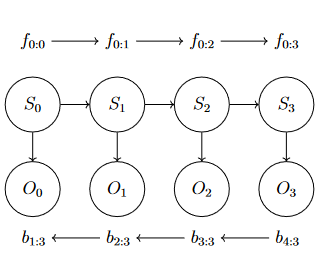
defn.(most likely explanation) find the sequence of states that is most likely generated all the evidence to date is P(S0:t∣O0:t)
which sequence of states is most likely to have generated the observations
Week 8. Oct 24
learning
agent needs to remember its past in a way that is useful for its future
want agent to do more, do better, do faster
why want agent to learn?
cannot anticipate all possible situations
cannot anticipate changes over time
do not know how to program a solution
the learning architecture
problem/task
experience/data
background knowledge/bias
measure of improvement
types of learning problems:
supervised learning: given input features, target features and training examples, predict value of target features for new examples given their values on input features
unsupervised learning: learning classifications when examples do not have targets defined
eg clustering, dimensionality reduction
reinforcement learning: learning what to do based on rewards and punishments
two types of supervised learning problems:
classification: discrete target features (eg weather)
regression: continuous target features (eg temperature)
supervised learning
given training examples of the form (x,f(x))
return a hypothesis function h that approximate the true function f
learning as search problem:
given a hypothesis space, learning is search problem
search space is large for systematic search
ml techniques are often some forms of local search
eg. fitting points
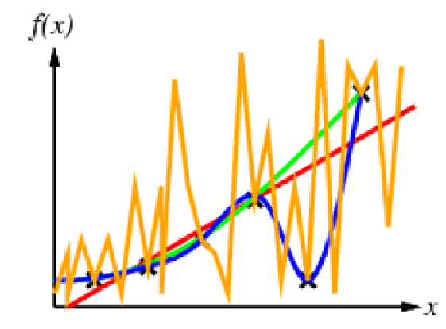
all curves can be justified as the correct one from some perspective.
no free lunch theorem: to learning something useful, we have to make some assumptions - have an inductive bias
assumptions include: do we have any outliers? does the curve follow a particular parametric form?
generalization:
goal of ml is to find a hypothesis that can predict unseen examples correctly
how to choose hypothesis that generalizes well?
ockham's razor: prefer simplest hypothesis consistent with data
cross-validation: more principled approach to choose hypothesis
tradeoff between
complex hypothesis that fit training data well
simpler hypothesis that may generalizes better
bias-variance tradeoff:
bias: if i have infinite data, how well can i fit data with my learned hypothesis?
a hypothesis with high bias makes strong assumptions, too simplistic, has few degrees of freedom, does not fit the training data well
variance: how much does learned hypothesis vary given different training data?
hypothesis with high variance has a lot of degrees of freedom, is very flexible, and fits the training data well. but whenever the training data changes, the hypothesis changes a lot
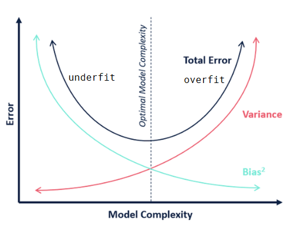
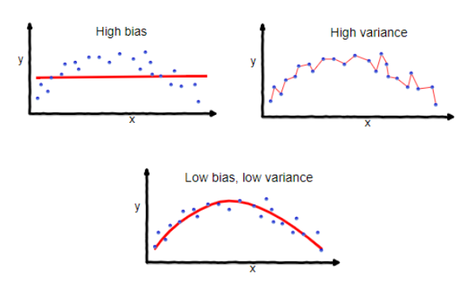
cross validation
use part of the training data as a surrogate for test data (called validation data).
use validation data to choose hypothesis
steps:
break training data into L equally sized partitions
train a learning algo on K-1 partitions
test on remaining 1 partition
do this K times
calculate average error to assess the model
after the cross validation
either select one of K hypothesis as trained hypothesis
train new hypothesis with new data using parameter selected by cross validation
decision tree
simple model for supervised classification
a single discrete target feature (class)
each internal node performs a boolean test on an input feature
edges are labelled with values of input value (true/false)
each leaf node specifies a value for target feature
how to build decision tree?
need to determine order of testing input features
given order of testing input features, we can build a decision tree by splitting the examples
which decision to create?
which order of testing input features to use?
search space too big for systematic search => use greedy (myopic) search
should we grow full tree?
need a bias. eg smallest tree (as it is more likely to predict unseen data well)
eg. will Bertie plat tennis?
training set
Day Outlook Temp Humidity Wind Tennis?
1 Sunny Hot High Weak No
2 Sunny Hot High Strong No
3 Overcast Hot High Weak Yes
4 Rain Mild High Weak Yes
5 Rain Cool Normal Weak Yes
6 Rain Cool Normal Strong No
7 Overcast Cool Normal Strong Yes
8 Sunny Mild High Weak No
9 Sunny Cool Normal Weak Yes
10 Rain Mild Normal Weak Yes
11 Sunny Mild Normal Strong Yes
12 Overcast Mild High Strong Yes
13 Overcast Hot Normal Weak Yes
14 Rain Mild High Strong No
test set
1 Sunny Mild High Strong No
2 Rain Hot Normal Strong No
3 Rain Cool High Strong No
4 Overcast Hot High Strong Yes
5 Overcast Cool Normal Weak Yes
6 Rain Hot High Weak Yes
7 Overcast Mild Normal Weak Yes
8 Overcast Cool High Weak Yes
9 Rain Cool High Weak Yes
10 Rain Mild Normal Strong No
11 Overcast Mild High Weak Yes
12 Sunny Mild Normal Weak Yes
13 Sunny Cool High Strong No
14 Sunny Cool High Weak No
reason: we have noisy data. maybe there is feature we do not observe
resolve by majority vote
or probabilistic leaf
there are no more examples
reason: did not observe the combination
resolve by using majority decision in the examples at parent node
or probabilistic leaf
eg. no more features.
eg. no examples.
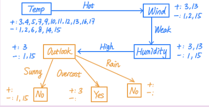
algo.(learning decision tree)
learner(examples, features):
if all examples are same class:
returnclass label
if no features left:
return majority decision
if no examples left:
return parent's majority decision
choose feature f
for each value in f:
build edge with label v
build subtree using examples where value of f is v
determining orders
each decision tree encodes a propositional formula. if we have n features, then each function corresponds to a truth table, each table has 2n rows. there are 22n possible truth tables.
we want to use greedy search => myopic decision at each step.
remove uncertainty as soon as possible
eg. which tree to use?
use 1st tree.
defn. given a distribution, P(c1),...,P(ck) over k outcomes c1,...,ck, the entropy is
I(P(c1),...,P(ck))=−i=1∑kP(ci)log2(P(ci))
it is a measure of uncertainty.
eg. consider a distribution over two outcomes ⟨p,1−p⟩ where 0≤p≤1. the max entropy is 1 (at p=1/2); min entropy by definition is 0 (at p=0 or 1).
when deciding feature, compute entropy before testing a feature:
Hi=I(p+np,p+nn)
where p is # of positive cases and n is # of negative cases. the expected entropy after testing the feature is
Hf=i=1∑kp+npi+niI(pi+nipi,pi+nini)
where pi,ni corresponds to # of cases for feature value vi. then the information gain (entropy reduction) is Hi−Hf.
we should test the feature that has more information gain.
real-valued features
discretize the feature
disadvantage: lose valuable information. tree may be complex.
allow multiway split
tree is complex but shallower
or restrict to binary split
tree is simpler and compact => but deeper
may test feature multiple times
use this when domain is unbounded
method to choose split points
sort instances according to real-valued feature
possible split points are values that are midway between two different and adjacent values
suppose feature value changes from X to Y, should we consider (X+Y)/2 as possible split point?
let LX be all labels for examples where feature takes value X
let LY be all labels for examples where feature takes value Y
if there exists labels a∈LX,b∈LY such that a=b, then (X+Y)/2 is possible
determine expected info gain for each possible split point and choose one with largest gain
eg. is midway between 21.7 and 22.2 possible split point if we have
1. 21.7 No
2. 22.2 No
3. 22.2 Yes
yes. the 1st and 3rd labels are different.
overfitting
problem: growing a full tree is likely to lead to overfitting.
strategies:
pre-pruning
set max depth
set min examples at leaf node
set min info gain
reduction in training error
post-pruning
may work better
it is possible we need two information to predict but only one does not work (eg XOR)
Week 9. Oct 31
neural network
the relationships between input and output are complex, need to build model that mimics human brain.
simple model of neuron:
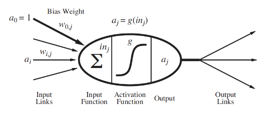
a linear classifier - it fires when a linear combination of inputs exceed some threshold
neuron j computes a weighted sum of its input signals inj=∑i=0nwijai
neuron j applies an activation function g to the weighted sum to derive output, ie aj=g(inj)
where neuron i sends input signal ai to neuron j. the link between i and j has weight wij, which is strength of connection.
the neuron has a dummy input (bias) a0=1 with an associated weight w0j.
desirable properties of activation function
nonlinear: complex relations are nonlinear; combining linear funcs still gives linear funcs
mimics behavior of real neurons: neuron is fired iff weighted sum of input signal is large enough
differentiable almost everywhere: need to use optimization algos eg. gradient descent, which requires differentiability
common activation functions:
defn.(step function)
g(x)={0,1,x>0x≤0
defn.(sigmoid function)
σ(x)=1+e−kx1
mimics step function by tunning k. usually k=1 in practice.
as k increases, it becomes steeper and closer to step function
differentiable everywhere
has vanishing gradient problem: when x is very large, g(x) corresponds to little change in x. network learns slowly
has dying ReLU problem: when inputs approach 0 or are negative, gradient is 0 and network does not learn
defn.(leaky ReLU)
g(x)=max(0,x)+kmin(0,x)
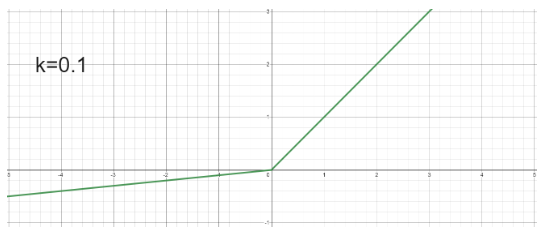
where k is some small positive value (for negative region)
perceptrons
kinds of networks:
feedforward network
forms DAG
has connections only in one direction
represents a function of its inputs
recurrent network
feeds its outputs into its inputs (not DAG)
can support short-term memory. for given input, behavior depends on its initial state, which may depend on previous inputs
perceptrons:
single-layer feedforward neural network
inputs directly connected to outputs
can represent some logical functions (eg AND, OR, NOT)
eg. using step function as activation function, what does this represent?
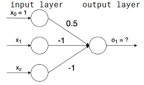
o1=g(∑iwixi)=g(1⋅0.5+−x1−x2)=g(0.5−x1−x2)
when x1=1,x2=1,g(0.5−1−1)=g(−1.5)=0
when x1=1,x2=0,g(0.5−1−0)=g(−0.5)=0
when x1=0,x2=1,g(0.5−0−1)=g(−0.5)=0
when x1=0,x2=0,g(0.5−0−0)=1
it is NOR gate.
limitations of perceptrons:
[Perceptrons: An introduction to computational geometry. Minsky and Papert. MIT Press. Cambridge MA 1969.] showed it is not possible to has XOR gate using perceptrons
need deeper networks
it leads to first AI winter
reason: a perceptron is linear classifier but XOR is not linearly separable
eg. show it is not possible to use perceptron to learn XOR.
suppose we can represent XOR using a perceptron and the activation function is step function. then we have
adding first two equations we get w21+w11>−2w01. from 4th equation we get −2w01≥−w01.
then we have w21+w11>−2w01≥−w01≥w21+w11, a contradiction.
we can 2-layer perceptrons to learn the XOR function:
it is a combination of an AND and NAND: (x1∧x2)∧¬(x1∧x2)).
gradient descent
a local search algo to find minimum of a function.
steps:
initialize weights randomly
change each weight in proportion to the negative derivative of error wrt weight, ie W:=W−η∂W∂E, where η is learning rate
terminate when
after some number of steps
error is small
or changes get small
if gradient is large, curve is steep and we are likely far from minimum (overshooting). if gradient is small, curve is flat and we are likely close to minimum.
updating weights based on data points:
gradient descent updates weights after sweeping all examples
to speed up learning, update weights after each example
incremental: update weights after each example
stochastic: example is chosen randomly
with cheaper steps, weights become more accurate quickly, but not guaranteed to converge as individual examples can move weights away from minimum
batched: update weights after a batch of examples
eg. consider network
let y^=z(2) be the output of this network.
backpropagation:
efficient method to compute gradients in a multi-layer network
given training examples (xn,yn) and an error/loss function E(y^,y)
forward pass: get error E given inputs and outputs
backward pass: get gradients ∂Wjk(2)∂E and ∂Wjk(1)∂E
update each weight by sum of partial derivatives for all training examples
forward pass:
aj(1)=∑ixiWij(1),zj(1)=g(aj(1))
aj(2)=∑izj(1)Wij(2),zj(2)=g(aj(2))
the error function is E(z(2),y)
backward pass:
∂Wjk(2)∂E=∂ak(2)∂Ezj(1)=δk(2)zj(1) where δk(2)=∂zk(2)∂Eg′(ak(2))
∂Wij(1)∂E=∂aj(1)∂Exi=δj(1)xi where δj(1)=(∑kδk(2)Wjk(2))g′(aj(1))
in general to compute δj(ℓ)=∂aj(ℓ)∂E for unit j at layer ℓ, we have
δj(ℓ)=⎩⎨⎧∂zj(ℓ)∂E⋅g′(aj(ℓ)),(∑kδk(ℓ+1)Wjk(ℓ+1))⋅g′(aj(ℓ)),j is output unitj is hidden unit
matrix notation:
Z(1)=g(A(1))=XW(1)
Z(2)=g(A(2))=g(Z(1)W(2))
Δ(2)=∂Z(2)∂Eg′(A(2))
Δ(1)=(W(2)Δ(2)⊺)⊺∗g′(A(1)) (?)
remove the weights for bias nodes
∂W(1)∂E=X⊺Δ(1) (?)
∂W(2)∂E=Z⊺Δ(2) (?)
comparison
when to use neural network:
high dimensional or real inputs, noisy (sensor) data
form of target function is unknown
not important to explain to human
when not to use neural network:
difficult to determine network structure (# layers, # neurons)
difficult to interpret weights especially in multilayered networks
tendency to overfit in practice
comparison with decision tree:
neural network
decision tree
data types
images, audio, text
tabular data
size of data
lots; easily overfit
little
form of target function
can model any function
nested if-else
architecture
# layers, # neurons per layer, activation func, initial weights, learning rate; all are important
some params to prevent overfitting
interpret learned function
blackbox; difficult to interpret
easily interpretable
time available to train
slow
fast
Week 10. Nov 7
clustering
unsupervised learning tasks:
representation learning: learning low-dimensional representations of examples
generative learning: learning probability distribution from which new examples can be drawn as samples
clustering: common unsupervised representation learning task.
two types of clustering:
hard clustering: each example is assigned to 1 cluster with certainty
soft clustering: each example has probability distribution over all clusters
k-means
hard clustering algo
given number of clusters k, training examples X∈Mm×n(R), we want to learn a representation that assigns examples to classes
suppose each example has n real features: x=⟨x1,...,xn⟩, we learns a centroid for each cluster that is shortest distance from x
eg euclidean distance d2(c,x)=∑j=1n(cj−xj)2
eg. k=3, x=[x1,x2]
algo.(k-means)
assign each example x to a random cluster: Y∈Nm
randomly initialize k centroids C∈Mk×n(R)
while not converged:
for each cluster c:
calculate centroid by calculating average feature value for each example currently classified as cluster c: Cc←nc1∑j=1ncXcj
for each example x:
assign x to the cluster whose centroid is closest: Yi←argmincd(Cc,Xi)
finding best solution:
k-means is guaranteed to converge with L2 distance
solution not guaranteed to be optimal
to find better solution, one can
run multiple times with different random initial cluster assignments
scale features so their domains are similar
choice of k greatly determines outcome of the clustering
so long as we have ≤k+1 examples, running k-means with k+1 clusters will result in lower error than running with k clusters
too large k defeats the point of representation learning
the elbow method:
run k-means with multiple values of k∈{1,2,...,kmax}
plot average distance across all examples and assigned clusters
select k where there is drastic reduction in error
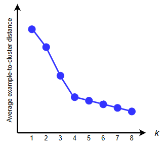
it is manual so can be ambiguous.
sihouette analysis
run k-means with multiple values of k∈{1,2,...,kmax}
calculate average sihouette scores(x) for each k across data set where
s(x)={max(a(x),b(x))b(x)−a(x)0,∣Cx∣>1,∣Cx∣=1
and a(x) is average distance from example x to all other examples in its own cluster
b(x) is smallest of average distance of x to examples in any other cluster
choose k that maximizes the score
autoencoder
also a representation learning algo that learns to map examples to low-dimensional representation
it has 2 main components
encodere(x): maps x to low-d representation z^
decoderd(z^): maps z^ to its original representation x
autoencoder implements x^=d(e(x))
x^ is the reconstruction of original input x
encoder and decoder are learned such that z^ contains as much info about x as needed to reconstruct it
we want to minimize squares of differences between input and prediction: E=∑i(xi−d(e(x1)))2
eg. linear autoencoder is simplest form of autoencoder, where e and d are linear functions with shared weight matrix W:
z^x^=Wx=W⊺z^
eg. deep neural network autoencoder
e and d are feedforward neural networks, joined in series
train with backpropagation
generative adversarial networks (GANs)
a generative unsupervised learning algo to generate unseen examples that look like training examples
GAN iis pair of neural networks:
generatorg(z)
z is usually sampled from gaussian distribution: given vector z in latent space, produces example x drawn from a distribution that approximates true distribution of training examples
discriminatord(x): classifier that predicts whether x is real (from training set) or fake (made by g)
it is trained with minmax error: E=Ex[logd(x)]+E[log(1−d(g(z)))]
discriminator tries to maximize E
generator tries to minimize E
decoder usually d(x)∈{0,1}
after convergence:
g produces realistic images
d outputs 1/2, indicating max uncertainty
algorithmic bias
Mathieu Doucet
examples: HR system fir screening job applicants based on ML; credit systems for screening loan applicants and setting interest rates; insurance systems; criminal risk assessment; crime prediction system to deploy police resources; university admission system
some questions
epistemic question: how to know if prediction is based
normative question: is it fair
epistemic and technical question: why is it biased
technical and engineering question: what can be done about it
normative and practical/policy question: what should be done about it
statistical/moral
prediction is not accurate (system predicts a nonexisting difference in groups which)
in other cases, treating two groups differently would be unfair even if prediction is accurate (moral bias)
bias-in-bias-out
predictive algos are based on historical training data
historical data often reflect structural bias
prediction end up perpetuating the bias
there are two versions of this problem
training data offer distorted and inaccurate picture of the world
training data is accurate but the world is unjust and unfair
policymaker problem: how to use the prediction (if it is biased)
solutions:
excluding protected group membership?
exclude race and gender data from training data
but can guess gender from name; can guess race from postal code (detroit)
find less biased dataset
prefer groups that are biased against
can the algorithm itself reflect bias?
speed and accuracy tradeoff
explainability vs efficiency
individual vs group-level measures
what kinds of errors are more costly
what are we predicting?
in picking target, it is worth asking whether it actually reflects what is cared about
grades may not be good measure of student learning
Week 11. Nov 14
explainability
black box model: a model whose predictions are not understood because of its high complexity.
interpretability: how well we can understand how a model gives a prediction
hard to achieve if not inherent
can understand how it works by inspection
eg decision trees, linear regression, bayes net are interpretable
explainability: how well we can understand why a model produces an output
can generate explanations that summarize what model does in a human-friendly way
eg heatmaps, feature importance weights
intrinsic explanations: explanations are a consequence of interpretable model design
eg: with a decision tree we can trace through it to understand the decision
some learning algos have explanation baked into learning
post-hoc explanations: explanations for models that are already trained
first train then explain
summarize how model makes decision in human-friendly way
global explanations: explains functionality of entire model
local explanations: explanations for individual predictions or for related examples
model-specific explanations: method only works for specific type of model architecture
may exploit model structure
model-agnostic explanations: method can produce explanations for any model architecture
Marco T ́ulio Ribeiro, S. Singh, and C. Guestrin, “’Why Should I Trust You?’: Explaining the predictions of any classifier,” CoRR, vol. abs/1602.04938, 2016
categorization: post-hoc, model-agnostic, local
steps:
normalize features
given any model f that takes input x and returns y^, create a new dataset X′ of fictitious examples surrounding x
train an interpretable model g using x′∈X′ as inputs and f(x′) as labels
the explanation is obtained by inspecting g
eg rules of decision tree, weights of linear regression
local explanation
advantages:
choice of surrogate model is flexible
choice of black-box model is flexible (model-agnostic)
can (in theory) be used for any type of data
can see impacts of individual features
disadvantages
usefulness is limited for some data types
size of neighbourhood is hard to tune
explanations can be unstable
MACE (model-agnostic counterfactual explanations)
A. H. Karimi, G. Barthe, B. Balle, and I. Valera, “Model-agnostic counterfactual explanations for consequential decisions,” 2020, vol. 108, pp. 895–905
categorization: post-hoc, model-agnostic, local
counterfactual explanation: for example x, a counterfactual explanation is another (usually fictitious) example xc such that x=xc,f(x)=f(xc).
usually want counterfactuals as close as possible to original example
human-friendly since human naturally think in terms of casual explanations
steps:
create a characteristic formulaϕf that describes model's functionality
eg. decision tree <=> logical formula
define a counterfactual formulaϕCFf for example x that is true for counterfactual xc such that f(x)=f(xc) and d(x,xc)≤δ
distance function is weighted sum of 3 norms: d(x,xc)=α∣∣D(x,xc)∣∣0+β∣∣D(x,xc)∣∣1+γ∣∣D(x,xc)∣∣∞
0-norm is number of differing features
1-norm gives average abs difference
∞-norm gives max change across features
distance formula: ϕd(x,xc)=d(x,xc)≤δ
find closest counterfactual xc that satisfies ϕ(x,xc)=ϕCFf(xc)∧ϕd(x,xc)
repeatedly call boolean satisfiability oracle for progressively smaller δ until ϕ is satisfable
approximation:
define accuracy parameter ϵ, then we can do binary search over δ∈[0,1] such that d(xϵ,x)≤d(xc,x)+ϵ, where xϵ is the counterfactual returned and xc is actually closest counterfactual
results in O(logϵ1) calls to oracle
not all explanations are useful. we can add more conditions (plausibility criteria) to the logical formula that specify features that cannot be changed.
eg. You have a client who wants to sell their house for $1 500 000, but your model predicts it will sell for $1 430 000. The client asks why your model predicts a price lower than their target, so you apply MACE specifying in the logical formula that the minimum prediction is $1 500 000.
utility node (diamond): represents utility (happiness) function on states
a policy specifies what agent should do under all contingencies
for each decision variable, policy specifies a value for the decision variable for each assignment of values to its parents
eg. The robot must choose its route to pick up the mail. There is a short route and a long route. On the short route, the robot might slip and fall. The robot can put on pads. Pads won’t change the probability of an accident. However, if an accident happens, pads will reduce the damage. Unfortunately, the pads add weight and slow the robot down. The robot would like to pick up the mail as quickly as possible while minimizing the damage caused by an accident.
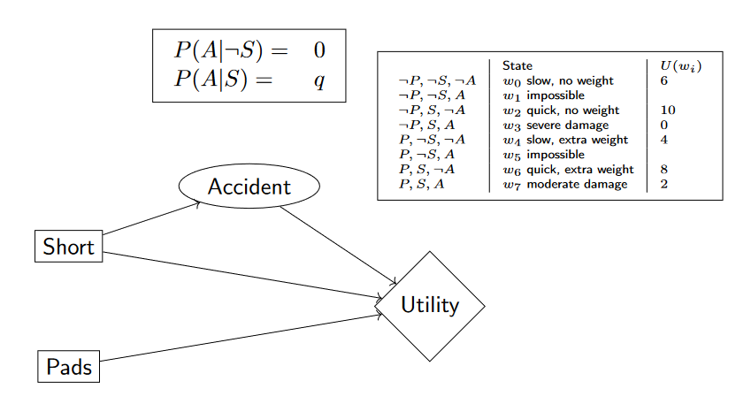
there is no unique utility function. use common sense to choose constraints
eg. when accident occurs, does robot prefer short route or long?
the robot must have taken the short route, so there is no utility for PSA and PSA.
eg. when an accident occurs, does robot prefer pads?
the robot would prefer pads as it reduces damage => U(PSA)>U(PSA).
how to choose an action:
set evidence variables for current state
for each possible value of decision node
set decision node to that value
calculate posterior probability for parent nodes of the utility node
calculate expected utility for action
return action with highest expected utility
eg. compute expected utility of not wearing pads and choosing long route
prune all nodes that are not ancestors of utility node
eliminate (sum out) all chance nodes
for the single remaining factor, return the max assignment that gives max value
since we are making S, P decisions at same time, we can combine them into a single node, and its domain is the cross product of domains of original nodes.
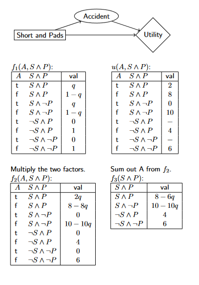
eg. consider the weather network, where decision node depends on a chance node.
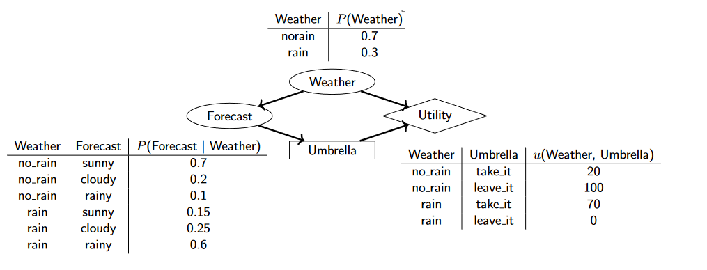
since forecast has 3 values and there are 2 possible decisions, there are 2^3=8 possible policies.
eg. consider the policy: take umbrella iff forecast is rainy. what is expected utility?
it must terminate as there finite # of policies and each step yields a better one.
to solve the policy evaluation we can also do approximation by performing a number of simplified value iteration steps
for each step j, do Vj+1(s)←R(s)+γ∑s′P(s′∣s,π(s))Vj(s′).
eg. apply policy iteration for given grid. assume γ=1. agent moves to intended position with intended direction with prob 0.8; 0.1 prob for turning left, 0.1 prob for turning right.
+-----+-----+
|-0.04| +1 |
+-----+-----+
|-0.04| -1 |
+-----+-----+
observations:
N(s,a) = 5 for all s, a
N(s,a,s') = 3 for intended direction
= 1 for any other direction with positive transition prob
current estimates:
V+(s11) = -.6573, V+(s21) = .9002
bellman eqs for Q: Q(s,a)=∑s′P(s′∣s,a)(R(s′)+γmaxa′Q(s′,a′))
they are equivalent; we want to learn Q
assume we observed ⟨s,a,s′,r′⟩, assume transition always occur (P(s′∣s,a)=1), then we have an estimate Q′(s,a)=R(s′)+γmaxa′Q(s′,a′). we define the temproal difference (TD) to be Q′(s,a)−Q(s,a).
algo.(passive Q-learning)
follow policy π and generate an experience ⟨s,a,s′,r′⟩
update reward function: R(s′)=r′
update Q(s,a) using the temporal difference update rule
where 0<α<1 is learning rate. if α decreases as N(s,a) increases, Q values will converge to optimal values. eg α(N(s,a))=9+N(s,a)10.
algo.(active Q-learing)
initialize R(s),Q(s,a),N(s,a),M(s,a,s′)
repeat until we have visited each (s,a) at least Ne times and Q(s,a) converges
determine best action a for current state s
a=aargmaxf(Q(s,a),N(s,a))
or random action (greedy) / softmax
take action a and generate an experience ⟨s,a,s′,r′⟩
update reward function R(s′)←r′
update Q(s,a) using the temporal difference update rule (greedy)
Q(s,a)←Q(s,a)+α(R(s′)+γa′maxQ(s′,a′)−Q(s,a))
eg. how to initialize Q(sT,a) for terminal state sT on any action a? init to 0 since there is no action to take => no util.
remark. we get the policy using π(s)=argmaxaQ(s,a)
properties of Q-learning:
learns Q instead of V
model-free: does not need to learn transition probabilities P(s'|s,a)
learns an approximation of optimal Q-values as long as agent explores sufficiently
smaller learning rate => closer it will converge, but slower
ADP vs Q-learning:
whether we need P
ADP needs more computation per experience. it tries to maintain consistency in util values between neighbouring states using bellman eqs
ADP converges much faster than Q-learning. Q-learning learns slower and shows much higher variability
state-action-reward-state-action SARSA
in Q-learning, we have ⟨s,a,r′,s′,a′⟩ as experience.
algo.(SARSA)
initialize R(s),Q(s,a)
repeat until Q(s,a) converges
if starting a new episode, determine a for initial state s0 using current policy (determined by exploration strategy). s←s0
take action a and generate an experience ⟨s,a,r′,s′⟩
update reward function: R(s′)←r′
determine action a′ for state s′ using current policy
update Q(s,a) using temporal difference update rules
Q(s,a)←Q(s,a)+α(R(s′)+γQ(s′,a′)−Q(s,a))
update a←a′,s←s′
Q-learning vs. SARSA
Q-learning is off-policy and SARSA is on-policy
for a greedy agent, they are same; if agent explores, they are very different
Q-learning is more flexible: it learns to behave well even exploration policy is random or adversarial
SARSA is more realistic: it can avoid exploration with large penalties. it learns what will actually happen instead of what the agent would like to happen
Q-learning is more appropriate for offline learning when agent does not explore. SARSA is more appropriate when agent explores
eg. in a high-stakes online learning problem (eg self-driving car), would it better to use Q-learning or SARSA? use SARSA as it is often more likely to learn less risk policies.